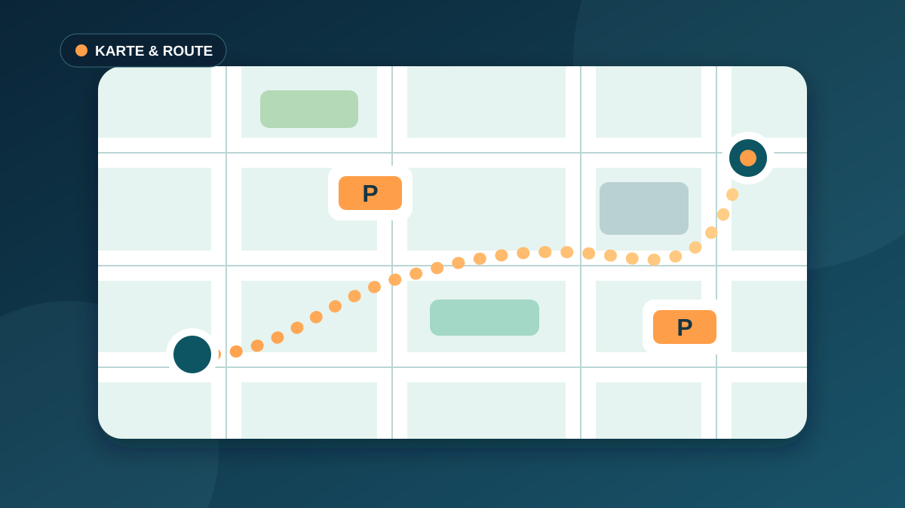

Webanwendung · Einzelprojekt
WerkSpot
Eine Webanwendung zur Suche nach Park- und Ladezonen in Bern. Eingebundene Parkplatzdaten aus dem Geoportal Bern unterstützen die Suche nach geeigneten Standorten. Dazu kommen Adresssuche, Umkreissuche und Navigation.